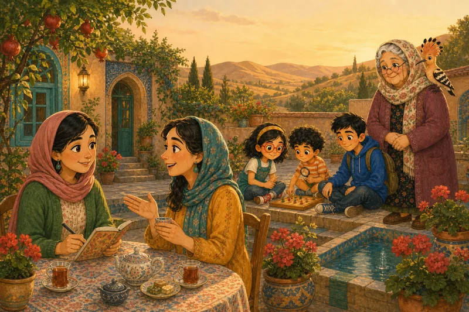

For grown-ups
What this is
How Do You Know? is the children’s part of Mastering Epistemology, a guide to knowledge, evidence and critical thinking. It turns the guide’s ideas into stories, games and questions for children aged 7 to 14, in English and Persian.
Each unit starts from a classic story (an old folk tale, a fable, a poem, a true story from history) and asks what it teaches about knowing. Every unit is written twice:
- Explorers (7–10): short sentences, pictures and read-aloud, three or four new words.
- Investigators (11–14): the same ideas taken further, with real terms and harder puzzles.
What children learn
What is ready now: two units (Unit 1, How do you know?, and Unit 2, What makes you say that?) and one game (Cause Detective). The other fourteen units are planned and will appear as they are finished. When all sixteen are done, a child can ask How do you know?; tell knowing from guessing and hoping; say where an idea came from and how that source can fail; give reasons and evidence; sort facts, opinions and tastes; spot common thinking traps; run a fair test; talk sensibly about chance; check what people, screens and AI say; notice the brain’s shortcuts; hold the right amount of confidence and change their mind; and disagree kindly.
Every unit uses the same four detective questions: What exactly is being said? How do they know? What else could explain it? How sure should I be?
How to use it
- At home: read or listen to the story together, then talk about the “Think about it” questions before playing the games. The “Talk about it” questions are for the dinner table.
- In class: each unit has a page of notes for teachers, with goals, a discussion plan, timings, answers and a rubric. A unit fits one lesson for 11–14-year-olds, or two short sessions for younger children.
- Discussion matters most. The games give quick practice; the thinking happens when children explain their answers.
Safety and privacy
There is no sign-in, no chat, no AI, no advertising and no tracking in the children’s section, and its pages load nothing from other websites. Stars and progress are kept only in the browser on this device. Links to other websites (for example, library catalogues in the book club) ask the child to check with a grown-up first. The privacy policy has the details.
How it was made
The pictures are made with AI and every one is checked by a person; the voices are synthetic; the old stories are retold from public-domain originals, and each one’s source is recorded. Modern books are recommended, never copied.